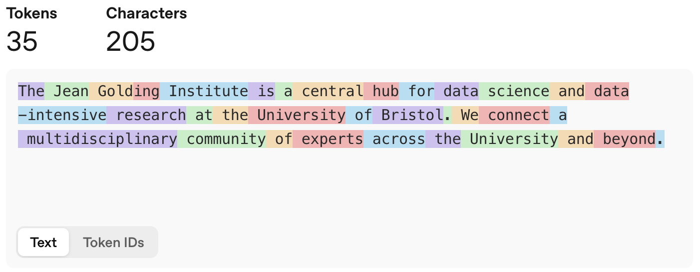

What are LLMs?
- LLMs are mathematical models of language that maps similar words to nearby positions in a conceptual space
- They predict which words are most likely to follow a given input, or prompt, based on patterns learned from vast amounts of text
- They work by pattern matching, not true understanding, therefore they are not infallible sources of truth
- Always verify important information from authoritative sources
- Be aware of bias in AI outputs and actively check for it
- Use critical thinking - if something sounds too precise or extreme, investigate further
- Always follow University of Bristol AI guidance
Natural Language Processing
Natural Language Processing (NLP) is a branch of Artificial Intelligence that serves as the foundational technology that enables Large Language Models to understand and generate human language. Natural language is inherently ambiguous and contextual.
Consider the sentence
“I saw the man with the telescope”.
This could mean:
- you used a telescope to see the man,
- or you saw a man carrying a telescope.
At its core, NLP transforms words, phrases, and sentences into numerical representations called embeddings—high-dimensional vectors that capture semantic meaning and relationships between linguistic elements. These embedding spaces are constructed so that words or phrases with similar meanings are positioned closer together in the vector space, while semantically different concepts are farther apart. For example, “king†and “man†would be nearby vectors, as would “queen†and “woman†but “man†and “woman†would be distant. This mathematical representation of language allows to perform some complex reasoning about text by manipulating these vectors through neural network operations.
The Large Language Model Revolution
Large Language Models represented a paradigm shift in learning language patterns from the Internet, books, and other vast text sources. Built on transformer architecture, LLMs focus on relevant parts of the input when processing words (tokens) or phrases, enabling understanding of long-range dependencies that earlier models missed. While you don’t need to understand the mathematics, the key insight is that LLMs work by finding patterns and relationships between concepts.
Let’s assume that we want to embed the words of this sentence:
The Jean Golding Institute is a central hub for data science and data-intensive research at the University of Bristol. We connect a multidisciplinary community of experts across the University and beyond.
Our chatbot will break the sentence in tokens of one or less words and assign each a numeric identifier, as depicted below. A rule of thumb is that one token generally corresponds to 4 characters of text for common English.

Each of these tokens will have a mapping in the embedding space of our LLM model.
What makes LLMs “large†is their training scale, the exposure to hundreds of billions of words from diverse sources allows them to internalize grammar, vocabulary, world knowledge, and reasoning patterns. The training process is elegantly simple: models learn by predicting the next word in sequences, adjusting internal parameters based on prediction errors. This forces development of sophisticated internal representations of language and knowledge.
LLMs fundamentally change how we approach NLP tasks. Instead of building specialized systems for each application, a single LLM can handle multiple tasks through different prompting strategies. The same model that excels at translation can also summarize documents, answer questions, or generate creative content without additional training.
The workplace implications are profound. Tasks requiring specialized software and technical expertise become accessible through natural language interaction. Document analysis, content generation, customer service automation, and data extraction are now available to non-technical users through conversational interfaces.
What can LLMs do?
LLMs can help with:
- Writing assistance: Drafting emails, reports, and documents
- Summarization: Condensing long texts into key points
- Translation: Converting between languages
- Question answering: Providing information on various topics
- Code generation: Writing and explaining programming code
- Creative tasks: Brainstorming ideas and creative writing
However, LLMs introduce new challenges. LLMs “reproduce bias and stereotyping, hallucinates, and makes mistakes†and require “discernment and the critical faculties of a human being to evaluate outputs.”
LLM Limitations
- Hallucinations. LLMs can generate plausible-sounding but entirely incorrect information.
- Bias. LLMs reflect biases present in their training data.
- Mistakes. LLMs can make subtle errors that are difficult to detect without domain expertise.
Why These Limitations Matter?
- Professional Responsibility. Errors in your work can have serious consequences.
- Academic Integrity. Using unverified AI-generated content violates scholarly standards.
- Ethical Obligations. Propagating bias can harm individuals and communities.
- Legal Implications. Incorrect information in professional contexts can create liability.
AI should enhance your capabilities, not replace your thinking:
✅ Research Assistant: “Help me identify key themes in these interview transcripts I’ve analyzed”
✅ Writing Coach: “Suggest ways to improve clarity in this paragraph I wrote”
✅ Brainstorm Partner: “What questions should I consider when designing this survey?”
✅ Editor: “Check this draft for logical flow and suggest improvements”
Exercise 1: Identifying LLM Limitations
Scenario: You’re preparing a briefing document about climate change impacts in Bristol.
Prompt:
Write 2 sentences about how climate change is impacting Bristol
Review the below outputs of three different LLM tools and identify potential issues:
- Which output seems most reliable and why?
- What red flags can you identify in each response?
- How would you verify the information before using it professionally?
Output A: “Bristol experienced its wettest year on record in 2023, with rainfall 40% above average. The Severn Estuary’s sea level has risen 15cm since 2000, directly threatening the city center.”
Output B: “Climate change will cause Bristol’s temperature to increase by exactly 3.2°C by 2050, making it uninhabitable for most residents. The city council has already approved plans to relocate the entire population to higher ground.”
Output C: “Bristol faces increased flooding risks due to climate change. The city has implemented various adaptation measures, though specific impacts vary by neighborhood and depend on global emission scenarios.”